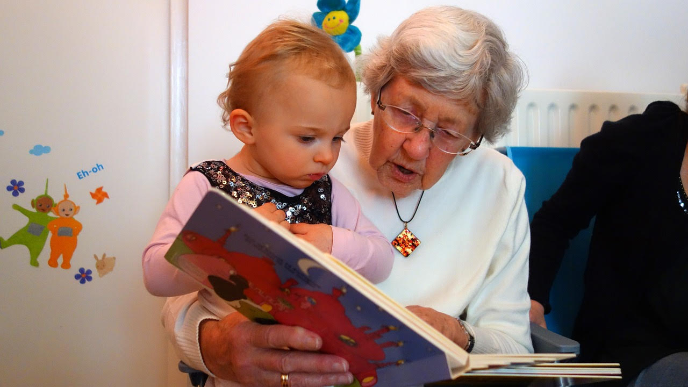
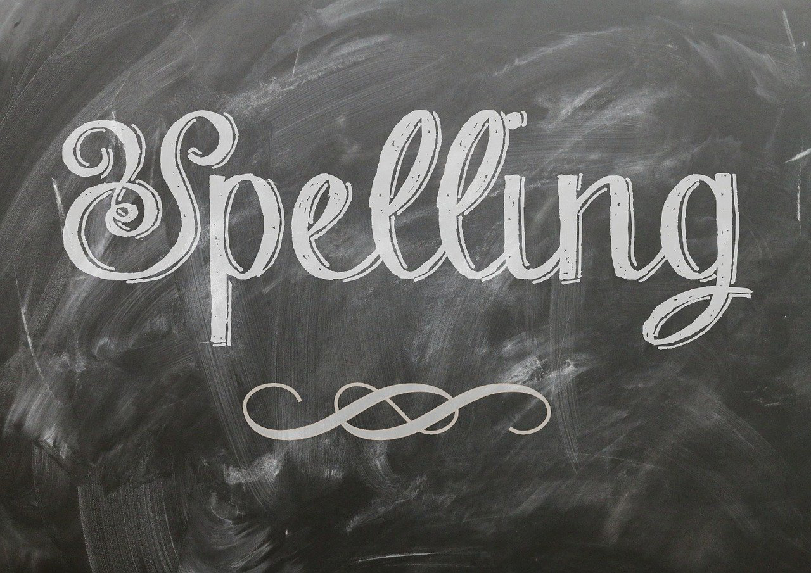

Hoe een betere uitspraak helpt met de spelling van woorden
geplaatst op 16 september 2024De Nederlandse taal kan een uitdaging zijn voor zowel beginners als gevorderden, vooral als het gaat om het correct spellen van woorden. Veel mensen worstelen met spelling omdat ze niet precies weten hoe de woorden uitgesproken moeten worden, of omdat ze niet goed begrijpen hoe de uitspraak invloed heeft op de spelling.

Tips om je kind d of dt te leren
geplaatst op 27 augustus 2024Hoe help je je kind om de regels van de Nederlandse spelling onder de knie te krijgen? Het blijkt dat veel ouders worstelen met het leren van d en dt. In dit artikel geven we je enkele handige tips om je kind op een leuke en effectieve manier te helpen bij het begrijpen en gebruiken van d en dt.
Tips om je kind de verkeersregels te leren
geplaatst op 26 juni 2024De eerste jaren zullen de kinderen met de fiets of auto naar school worden gebracht. Toch komt er ook een moment waarop het tijd is dat ze zelf naar school gaan. Uiteraard is dit deels afhankelijk van de afstand naar school en ook de veiligheid van de route er naartoe.

Creatieve opleidingen mbo: uit welke kun je kiezen?
geplaatst op 25 maart 2024Nadat je de middelbare school hebt afgerond en je de spellinglessen achter je kunt laten, is het tijd om te kiezen voor een vervolgopleiding. Misschien heb je al een idee welke opleiding je wil gaan volgen, of heb je een idee welke richting je op wil.

Voor het eerst een telefoon abonnement voor je kind. Waar let je op?
geplaatst op 25 januari 2024Staat je kind te popelen om met een eigen mobiele telefoon de online wereld te ontdekken? Dan ben je waarschijnlijk op zoek naar een telefoonabonnement dat goed bij hem of haar past, zonder dat je voor verrassingen komt te staan.
Handige tips voor het oefenen met een dictee?
geplaatst op 12 december 2023Een dictee kan voor veel kinderen een uitdagende ervaring zijn, maar met de juiste oefenstrategieën kunnen ze hun spellingvaardigheden aanzienlijk verbeteren. In dit artikel vind je dan ook enkele handige tips die kinderen kunnen helpen zich goed voor te bereiden op een dictee en zelfverzekerder te zijn tijdens toetsen.
Kun je spelenderwijs de woordenschat van kinderen vergroten?
geplaatst op 23 november 2023Kinderen willen natuurlijk het liefst ieder moment van de dag nieuwe dingen ontdekken. Logisch ook, want het meeste wat ze zien of tegenkomen is volledig nieuw voor ze. Dit begint al wanneer ze nog maar pas geboren zijn en voorzichtig om zich heen beginnen te kijken. Naarmate ze ouder worden, zal deze nieuwsgierigheid alleen maar verder toenemen.
De kracht van voorlezen - een spelende weg naar spellingvaardigheid
geplaatst op 21 november 2023Voorlezen gaat verder dan alleen het plezier van een goed verhaal. Het is een magische sleutel tot het ontwikkelen van spellingvaardigheid bij kinderen. In deze blogpost ontdekken we hoe deze activiteit niet alleen de verbeelding van kinderen voedt maar ook een solide basis legt voor hun taalontwikkeling.
Persoonlijke aandacht bij leren
geplaatst op 21 november 2023Op een gegeven moment moet je voor jouw kind een keuze maken naar welke school hij of zij gaat. De school moet bij het kind passen, zowel bij de persoonlijkheid van het kind als het leerniveau van het kind. Daarnaast moet de school ook aansluiten bij de behoeften en wensen van het kind.
Leren kiezen van de juiste jas
geplaatst op 6 november 2023Je jas is niet alleen een stijlstatement, maar ook een belangrijk onderdeel van je garderobe. Een goede jas biedt je lichaam de juiste bescherming. Of het nu een zonnige herfstdag is of een regenachtige winterochtend; de juiste jas kan het verschil maken tussen comfort en kou.
Voorbereiding auto theorie
geplaatst op 6 juli 2023Nu je weet wat je moet leren, hoe kun je je het beste voorbereiden op je examen? Eén manier is door middel van het auto theorie-examen oefenen online. Er zijn verschillende websites en apps beschikbaar waar je oefenexamens kunt vinden.

De handigste tools om je spelling en grammatica te controleren
geplaatst op 1 juli 2023Of je nu een e-mail aan je baas typt of een blog schrijft over de Bitcoin koers, grammatica en spelling zijn van cruciaal belang. Gelukkig zijn er spelling- en grammatica-apps die je werk controleren, de duidelijkheid verbeteren en eventuele fouten herstellen.
Online spelling oefenen
geplaatst op 30 juni 2023Spelling is super belangrijk in het Nederlands. Als je woorden correct kunt spellen, kun je berichten beter begrijpen en ook beter communiceren. Wil jij beter worden in spelling? Ben je op zoek naar manieren om jouw kind(eren) wat bij te brengen? Dan is online oefenen een leuke en effectieve manier om dat te doen!
Pacman om spelling te oefenen
geplaatst op 29 juni 2023Spellen kan een uitdaging zijn, vooral als het gaat om het correct spellen van woorden. Het is echter essentieel om een goede beheersing van spelling te hebben, omdat het de communicatie en het begrip van de taal bevordert. Er zijn een aantal creatieve manieren om het leerproces leuker en interactiever te maken. Een interessante en spannende manier om je spellingvaardigheden te verbeteren is door Pacman te spelen.
Spelling oefenen in de auto
geplaatst op 22 juni 2023Goed leren spellen is nodig voor de taalontwikkeling van kinderen. Het is een vaardigheid die ze nodig hebben in hun dagelijks leven en op school. Maar spellingsoefeningen kunnen soms saai en repetitief zijn, waardoor het moeilijk kan zijn om kinderen gemotiveerd te houden. Ben je op zoek naar creatieve manieren om spelling te oefenen? In dit artikel ontdek je hoe je spelling kunt oefenen tijdens autoritten en hoe je het leuk en educatief kunt maken voor kinderen.